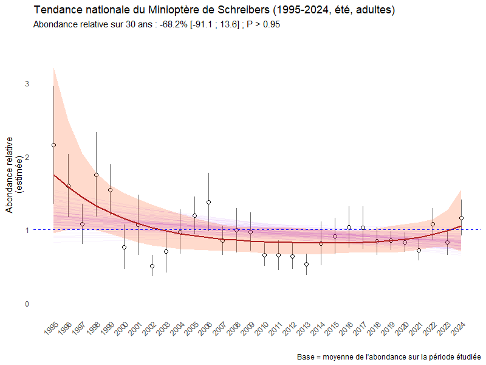
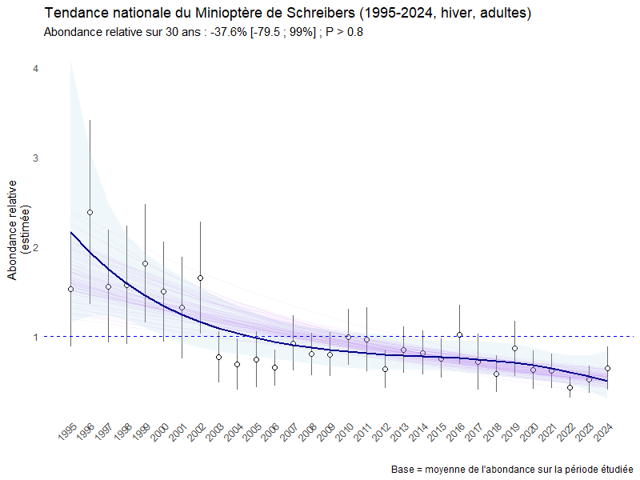

Analyse hiérarchique des tendances populationnelles d'une espèce de chauve-souris en France (1995-2024)
Le Minioptère de Schreibers (Miniopterus schreibersii), chauve-souris cavernicole protégée et classée « Vulnérable » sur la liste rouge nationale de l’UICN, est suivi depuis près de 30 ans par un réseau coordonné par la Société Française pour l’Étude et la Protection des Mammifères (SFEPM). L’espèce est recensée en période estivale dans les colonies de reproduction et en hiver dans les gîtes d’hibernation, sur plus de 400 sites répartis dans cinq grandes régions de France. L’étude vise à :
- Quantifier la tendance temporelle des effectifs adultes entre 1995 et 2024 ;
- Identifier les différences régionales et saisonnières ;
- Évaluer la probabilité de déclin à partir d’analyses probabilistes robustes ;
Méthodologie itérative
Le jeu de données final repose sur 62 sites estivaux et 60 sites hivernaux sélectionnés selon des critères de régularité et d'abondance (minimum 5 années de suivi dont 3 consécutives).
L'analyse intègre désormais les données complémentaires de la région Provence-Alpes-Côte d'Azur (cf. Note technique) qui n'avaient pas pu être utilisées lors de l'étude (cf. Rapport de l'étude).
Un pipeline de nettoyage et filtrage a permis d’harmoniser les données issues de multiples structures locales : standardisation des formats, catégorisation des variables, élimination des doublons, gestion des valeurs manquantes et application de seuils minimaux d’effectif, de fréquence de suivi et de fiabilité. Une analyse de sensibilité a permis de mettre en évidence les meilleurs paramètres de filtrage, inspiré par d'autres travaux. L’analyse repose sur trois approches complémentaires :
Usage d'un modèle TRIM (régression log-linéaire de Poisson) pour réaliser une première estimation de référence grâce à sa gestion des données manquantes par imputation et sa correction de la surdispersion.
Construction de modèles linéaires généralisés mixtes (GLMM) pour prendre en compte la structure hiérarchique des données (sites, régions, années, etc.) et exploiter des contrastes régionaux via des interactions.
Enfin, réaliser des estimations probabilistes à l'aide de modèles bayésiens hiérarchiques (négative binomiale) pour obtenir des pentes spécifiques par site et par région. Cette démarche permet alors d'intégrer explicitement les incertitudes et les effets croisés.
Les métriques clés calculées incluent la pente annuelle (β), la variation cumulée sur la période, la probabilité postérieure de déclin (P(β<0)), les intervalles de crédibilité (IC95 %) et la proportion de variance expliquée (R²).
Résultats
Les résultats mettent en évidence une tendance nationale nette au déclin, plus marquée en période estivale qu’hivernale.
En été, la tendance nationale indique une probabilité de déclin quasi certaine (P(β < 0) = 0,966) avec une baisse estimée à –68,2 %, portée par des signaux robustes en Bourgogne-Franche-Comté (–77,9 %, P = 0,993), en Occitanie (–67,1 %, P = 0,987) et en Corse (–84,6 %, P = 0,995).
| Région | P(β < 0) | β (log) | Variation (30 ans) | IC95 % (Variation) |
|---|---|---|---|---|
| Auvergne-Rhône-Alpes | 0,9360 | -0,0356 | -65,6 % | [-91,3 % ; 53,9 %] |
| Bourgogne-Franche-Comté | 0,9935 | -0,0503 | -77,9 % | [-95,2 % ; -27,5 %] |
| Corse | 0,9953 | -0,0624 | -84,6 % | [-95,9 % ; -41,9 %] |
| Nouvelle-Aquitaine | 0,9475 | -0,0321 | -61,9 % | [-86,6 % ; 31,6 %] |
| Occitanie | 0,9878 | -0,0370 | -67,1 % | [-87,3 % ; -14,5 %] |
| Provence-Alpes-Côte d'Azur | 0,9205 | -0,0347 | -64,7 % | [-91,7 % ; 101,4 %] |

Représentation de la tendance nationale du Minioptère de Schreibers sur la période estivale de 1995-2024. Les points représentent les effectifs moyens annuels, normalisés sur l’ensemble de la période. Les courbes violettes correspondent aux différentes trajectoires linéaires simulées par le modèle bayésien hiérarchique ; elles reflètent l’incertitude autour de la direction générale de la tendance. La courbe principale est un GLM simple fournissant une lecture descriptive indépendante du modèle, mettant en évidence les variations temporelles brutes.
En hiver, bien que l'incertitude soit plus marquée, le déclin reste majoritaire à l'échelle nationale (–37,6 %, P = 0,83) et se confirme localement, notamment en Corse (–58,7 %, P = 0,957) et en Bourgogne-Franche-Comté (–50,5 %, P = 0,899).
| Région | P(β < 0) | β (log) | Variation (30 ans) | IC95 % (Variation) |
|---|---|---|---|---|
| Auvergne-Rhône-Alpes | 0,7294 | -0,0105 | -27,1 % | [-78,1 % ; 256,2 %] |
| Bourgogne-Franche-Comté | 0,8991 | -0,0234 | -50,5 % | [-85,1 % ; 48,8 %] |
| Corse | 0,9573 | -0,0295 | -58,7 % | [-85,2 % ; 13,0 %] |
| Nouvelle-Aquitaine | 0,8350 | -0,0164 | -38,8 % | [-79,2 % ; 73,9 %] |
| Occitanie | 0,7793 | -0,0139 | -34,0 % | [-78,6 % ; 118,3 %] |
| Provence-Alpes-Côte d'Azur | 0,7441 | -0,0125 | -31,2 % | [-85,6 % ; 315,5 %] |

Représentation de la tendance nationale du Minioptère de Schreibers sur la période hivernale de 1995-2024. Les points représentent les effectifs moyens annuels, normalisés sur l’ensemble de la période. Les courbes violettes correspondent aux différentes trajectoires linéaires simulées par le modèle bayésien hiérarchique ; elles reflètent l’incertitude autour de la direction générale de la tendance. La courbe principale est un GLM simple fournissant une lecture descriptive indépendante du modèle, mettant en évidence les variations temporelles brutes.
Les analyses révèlent une forte hétérogénéité spatiale et saisonnière, confirmant que les colonies estivales, composées majoritairement de femelles reproductrices, sont particulièrement vulnérables. La variabilité interannuelle et les contrastes régionaux mettent en évidence l’intérêt des approches hiérarchiques pour distinguer signaux écologiques réels et fluctuations liées aux comptages annuels.
L'analyse souligne que si les effectifs bruts cumulés semblent augmenter, la modélisation des trajectoires individuelles des sites montre une dégradation réelle des populations. Cette hétérogénéité confirme la vulnérabilité des colonies, particulièrement en période de reproduction.
Une analyse focalisée sur les dix dernières années est envisagée pour évaluer plus finement l'impact des protocoles standardisés et de la coordination nationale sur les dynamiques récentes de l'espèce.